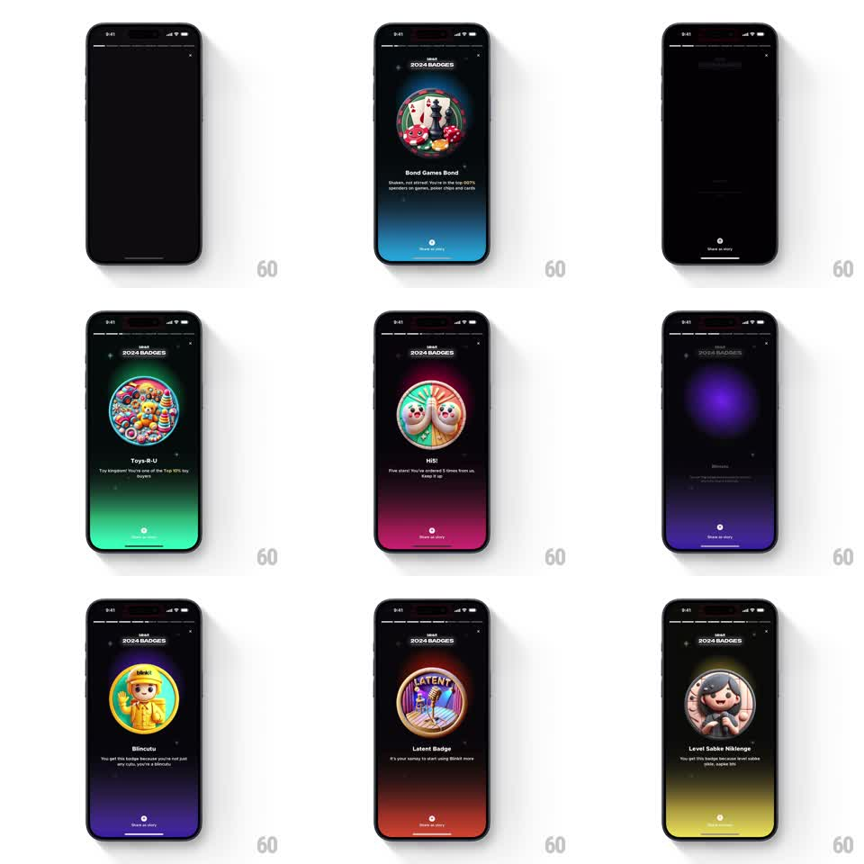

Media
Frame-by-frame

Rebuild this interaction 1:1: Blinkit's badge stories - each badge page springs its 3D badge into a glowing ring over a color-morphing background, and tapping or auto-advance flips to the next badge.

Rebuild this interaction 1:1: Blinkit's badge stories - each badge page springs its 3D badge into a glowing ring over a color-morphing background, and tapping or auto-advance flips to the next badge. ## Integration Integration: stack-agnostic spec - springs given as stiffness/damping, timed motions as duration + curve; map every value to your framework and animation library of choice. ## Scene Full-screen story pages, one per badge: progress segments on top, a circular badge art in a glowing ring at center (casino chips, toys, sloths, yellow raincoat character, mic, cat), badge name and a line of flavor copy beneath, a "Share as story" button at the bottom. Backgrounds morph per badge - teal, green, magenta, purple, orange, yellow. ## Motion spec Pattern: story pager with springy badge pop and background morph, ~600ms per page. - Advancing (auto every ~5s, or tap right edge): the background color morphs to the next badge's palette (400ms crossfade of full-bleed gradient). - The outgoing badge scales down and fades (200ms, ease-in) as the incoming badge pops into the ring (scale 0.5 to 1, spring stiffness 360 damping 14) with the ring's glow flaring on landing (opacity pulse, 300ms). - Badge name and copy fade up 120ms after the badge lands (250ms, 10px rise). - The progress segments fill across the current page's dwell; tapping left edge goes back one page with the same morph reversed. - The Share button fades in with the copy and pulses gently (scale 1 to 1.03, 1.5s loop) until dismissed. ## Calibration - The background morph starts before the badge pops - the stage sets, then the star enters. - The glow flare happens once per landing; it does not loop. ## Reduced motion Pages crossfade with badges pre-assembled. ## Don't miss - The ring around each badge glows in the badge's own palette - the ring color is part of the morph. - The "2024 BADGES" header and close button stay fixed across all pages; only the center content and background change.